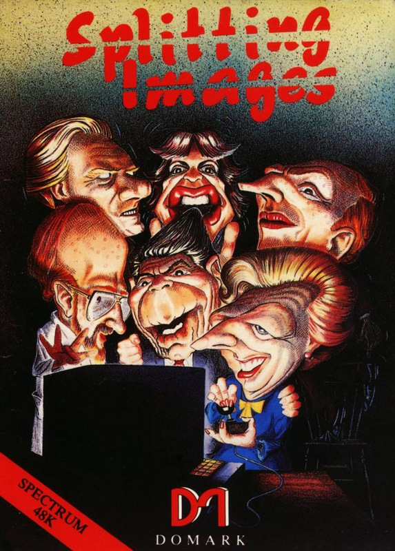
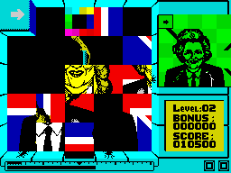
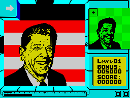

Splitting Images


{kind=link}

| Publisher: | Domark |
| Price: | £7.95 |
| Year: | 1986 |
| Source: | CRASH, Issue 30 |

Sliding block puzzles and jigsaws are as old as the Ark, but Domark and the Dutch software house Ernisoft have come up with a new, computerised variant. Although the name might suggest a tie-in with a certain TV program — don’t be fooled, there’s no wicked satire to be found in this game, and rubber puppets don’t appear. All you have to do is work against a time limit and assemble caricatures of the famous from little blocks.
All you have to do? Well not quite. Starting with Ronald Reagan, ten cartoons of famous faces have to be pieced together if the game is to be played through to the end. At the start of each level the main playing area is empty — a zone enclosed with blue buffers. A pulsating square cursor is under your control and sits under a flashing arrow at the top left of the screen. The image that has been split appears in a small window in the status area on the right, the bar display that monitors the time you have remaining is refreshed, and play commences.

at’s well out of character for the
Iron Lady
The cursor is used to shift the blocks around in the playing area. It can be moved in four directions, and once the cursor has been placed over a piece to be moved, pressing fire grabs the block. Holding fire and then moving the cursor whizzes the selected block off in the chosen direction. A moving block continues to travel in a straight line until another block or the blue buffer is hit, when it comes to rest. Pieces are brought on to the playing area by zipping the cursor under the flashing arrow, pressing fire to seize the hidden piece and moving right to fetch it into view. While the cursor is over a piece in the main play area, one of the squares on the little status panel picture turns white, revealing the correct location for that segment of the puzzle.
Twenty pieces have to be shuffled into the right order to make up each picture, and there are only four spare block positions at the top of the playzone — so some careful juggling is called for. Just to add a little variety to the game, cracks appear in some of the buffers. Blocks that are moved onto a cracked section of buffer bounce off, returning to their start point. Some of the cracks remain in the same part of the buffer throughout a level, while others hop around the place during play. Little sliding doors in the top, left and bottom buffers open and close. While a door is closed it acts as a normal section of buffer, but if a piece is shoved towards an open door it disappears from the playing area and joins the queue of pieces behind the flashing arrow.

again, and appears in all his glory against
the Stars and Stripes. Pity Humpty Dumpty
didn’t have a a chance to get the benefit
of SPLITTING IMAGES
Every so often, objects associated with the character whose likeness is being assembled are dragged into play. These objects can lead to bonus scores if you do the right thing with them — shoving the American Flag against the Russian flag for instance, earns a bonus of 1,500 points on the Ronnie Reagan screen. If one object is thrown against another object, they both dematerialise and if the right pairing has been achieved the bonus value flashes up at the point of collision before being added to the score.
Bombs are bad news — they explode five seconds after they are brought into play and have to be shoved against a tap (bonus of 5,000 points) or whisked out of an open doorway before they detonate. Failure to dispose of a bomb results in an explosion and the loss of a life. Other objects appear at random and can be combined: throwing a pistol against a bullet doubles your bonus score on that level, while matches and fuel should be kept well apart!
The number of points awarded for completing a level depends on the amount of time remaining when the final piece is slotted into place. Running out of time results in the loss of a life — but providing all three lives haven’t been lost, the blocks stay in place when you die. An extra life is awarded for reaching 100,000 points and extra time can be won on later screens by sliding a diamond into another gem.
CRITICISM
“While this game has almost nothing in common with the TV series it isn’t based on, I thought it was great. The caricatures of the characters are excellent, and the game moves at a very rapid pace, which adds to the fun. Things like the bombs and other bonus elements contribute towards this too, making it an extremely playable game. The graphics and sound effects are nicely executed, and the game is highly addictive, with that ‘one more little go’ element about it. I like it. It’s nice to see Domark getting their act together after the awful Friday the 13th.”
“This is definitely the best Domark game ever! I know that’s not saying much, but Splitting Images IS a really good game, and the most surprising bit about it is that the game is so simple in construction. The presentation is well above the normal Domark stuff and suits the game perfectly — simple but stunning. I found Splitting Images was totally compelling from the first time I picked up the joystick. The graphics are excellent with very smooth scrolling and some nice sound effects. Domark seem to have got the right balance of difficulty, with the ‘Reagan’ screen being easy to get past and ‘Maggie’ being a bit harder and each subsequent level presenting that bit more of a challenge. The game features lots of nice bonuses, which can improve your score tremendously and keep you addicted to the game for ages. I would recommend you buy this, as it’s definitely something different from the normal game.”
“Well done Domark, you’ve finally broken your spell of releasing poor games. I am well impressed. This is a very original, playable and compelling game. The graphics are colourful, detailed and generally well ‘finished’; the characters are all recognisable; the sound is nice too — there is a tune at the beginning and some very reasonable effects during the game itself. Playing the game can be a bit tricky until you get the hang of the control, but once you do, the action gets fast and furious. Disposing of the bombs is also tricky, and going for bonus scores means some extra thinking is called for. I enjoyed playing this one as it is fun and fast moving.”
COMMENTS
| Control keys: | O left, P right, Q up, A down, CAP SHIFT to SPACE fire, R and T abort, H pause, J continue |
| Joystick: | Kempston, Cursor, Interface 2 |
| Keyboard play: | Responsive, but a bit tricky |
| Use of colour: | Neat — no clashes |
| Graphics: | Fast moving; good caricatures |
| Sound: | Start and end tunes and spot effects |
| Skill levels: | One |
| Screens: | Ten |
| General rating: | A different, compelling and original game. |
| Use of computer: | 85% |
| Graphics: | 88% |
| Playability: | 89% |
| Getting started: | 90% |
| Value for money: | 87% |
| Overall: | 90% |